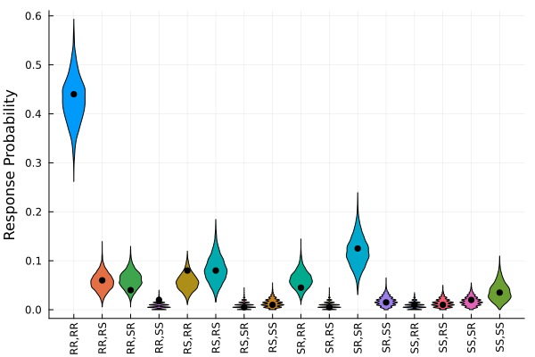

Bayesian Parameter Estimation
The purpose of this tutorial is to demonstrate how to generate and plot prior and posterior predictive distributions of a True and Error Theory model (TET; Birnbaum & Quispe-Torreblanca, 2018) using the Turing.jl package.
Load Packages
The first step is to load the required packages. You will need to install each package in your local environment in order to run the code locally. We will also set a random number generator so that the results are reproducible.
using Random
using StatsPlots
using TrueAndErrorModels
using Turing
using TuringUtilities
Random.seed!(6521)Generate Data
For a description of the decision making task, please see the description in the model overview. In the code block below, we will create a model object and generate 2 simulated responses from 100 simulated subjects for a total of 200 responses.
dist = TrueErrorModel(; p = [0.65, .15, .15, .05], ϵ = fill(.10, 4))
data = rand(dist, 200)16-element Vector{Int64}:
88
12
8
4
⋮
2
2
4
7Estimate the Parameters
In the code block below, we will create a model object for a TET model with 1 error probability parameter. Note that if you develop a custom model, it must return a NamedTuple of parameters in order to generate predictive distributions, as illustrated below.
model = tet1_model(data)
chains = sample(model, NUTS(1000, 0.65), MCMCThreads(), 1000, 4)Generate Posterior Predictive Model
The code block below creates a model for generating a predictive distribution. The inputs for predict_distribution are defined as follows:
TrueAndErrorModel: a model type used for generating simulated datamodel: a Turing model with data attachedfunc: an arbitrary function applied to the simulated data. In this case, the simulated data are normalized as response probabilities.n_samples: the number of simulated response per draw from the prior or posterior distribution
pred_model =
predict_distribution(TrueErrorModel; model, func = x -> x ./ sum(x), n_samples = 200)Generate Predictive Distribution
The next step is to call generated_quantities to sample from the predictive distribution. If you passed Prior() to sample above, a prior predictive distribution will be used. Otherwise, it will generate a posterior predictive distribution. The second line of code combines the four chains for each response pattern. Each row corresponds to a posterior predictive sample, and each column corresponds to a different response pattern.
post_preds = generated_quantities(pred_model, chains)
post_preds = stack(post_preds, dims = 1)4000×16 Matrix{Float64}:
0.455 0.095 0.065 0.015 0.06 0.08 0.0 0.025 0.055 0.005 0.07 0.015 0.005 0.01 0.02 0.025
0.44 0.045 0.025 0.01 0.075 0.065 0.0 0.005 0.06 0.0 0.17 0.01 0.005 0.015 0.035 0.04
0.43 0.06 0.055 0.015 0.045 0.06 0.01 0.015 0.04 0.005 0.135 0.015 0.0 0.02 0.015 0.08
0.415 0.07 0.09 0.01 0.025 0.08 0.01 0.015 0.05 0.01 0.155 0.02 0.01 0.01 0.01 0.02
0.41 0.06 0.05 0.005 0.06 0.06 0.005 0.01 0.06 0.015 0.15 0.02 0.01 0.02 0.025 0.04
0.455 0.06 0.045 0.025 0.03 0.105 0.0 0.0 0.06 0.005 0.1 0.025 0.015 0.01 0.015 0.05
0.365 0.06 0.07 0.02 0.09 0.065 0.03 0.0 0.04 0.015 0.14 0.025 0.03 0.005 0.01 0.035
0.39 0.075 0.075 0.005 0.105 0.085 0.01 0.0 0.085 0.005 0.09 0.005 0.01 0.015 0.02 0.025
0.455 0.055 0.055 0.005 0.045 0.095 0.0 0.01 0.04 0.0 0.165 0.005 0.005 0.025 0.015 0.025
⋮ ⋮ ⋮ ⋮
0.365 0.055 0.06 0.015 0.06 0.125 0.02 0.005 0.045 0.025 0.13 0.01 0.005 0.01 0.01 0.06
0.455 0.03 0.04 0.01 0.035 0.125 0.015 0.01 0.04 0.015 0.145 0.015 0.01 0.01 0.0 0.045
0.395 0.11 0.075 0.01 0.03 0.12 0.015 0.025 0.045 0.005 0.08 0.015 0.005 0.035 0.02 0.015
0.41 0.075 0.045 0.005 0.075 0.12 0.01 0.005 0.03 0.005 0.165 0.01 0.005 0.01 0.015 0.015
0.395 0.03 0.05 0.03 0.095 0.12 0.015 0.015 0.035 0.02 0.105 0.01 0.015 0.01 0.025 0.03
0.465 0.055 0.045 0.005 0.04 0.09 0.0 0.0 0.05 0.0 0.14 0.015 0.015 0.02 0.005 0.055
0.53 0.03 0.025 0.005 0.07 0.07 0.005 0.005 0.035 0.005 0.135 0.005 0.0 0.025 0.015 0.04
0.425 0.05 0.07 0.015 0.075 0.06 0.0 0.02 0.065 0.005 0.13 0.015 0.01 0.015 0.015 0.03
0.455 0.045 0.07 0.015 0.05 0.09 0.01 0.015 0.085 0.005 0.09 0.015 0.02 0.005 0.02 0.01Plot Predictive Distributions
Lastly, we will plot the posterior predictive distributions as violin plots. The first line of code gets a pre-made vector of response category labels. The function violin generates a violin plot and rotates the response category labels by 90 degrees for readability. The final line of code plots the data as black dots. As expected, the data are typically located near the bulk of the posterior predictive density.
labels = get_response_labels()
violin(
post_preds,
xticks = (1:length(labels), labels),
ylabel = "Response Probability",
leg = false,
grid = false,
xrotation = 90
)
scatter!(1:16, data ./ sum(data), color = :black)